生成煤岩层对比图
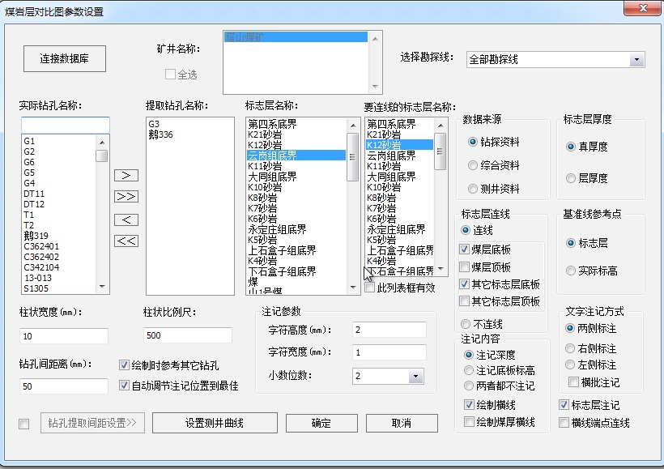
基本信息
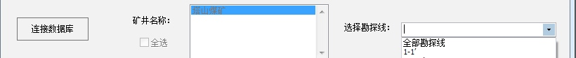
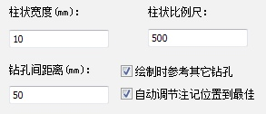
- 选择数据库
- 选择矿井名称
- 柱状宽度
- 钻孔间距离
- 柱状比例尺
选择勘探线
- 下拉可以选择所有的勘探线
- 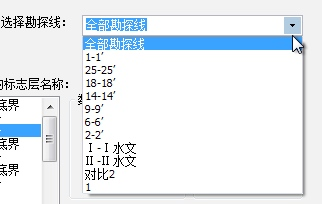
实际钻孔名称：当选中不同勘探线后，此列表框即动态的显示选中勘探线上的所有钻孔。
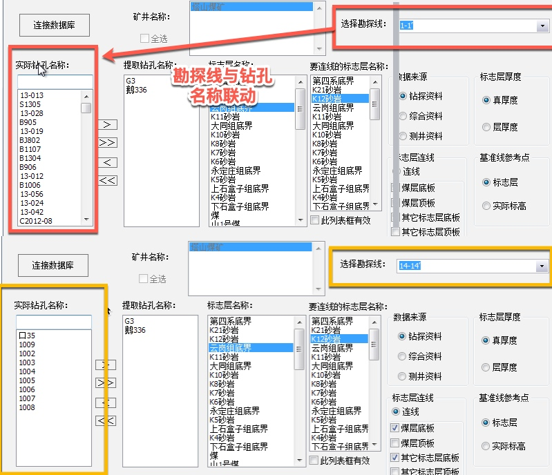
1提取钻孔名称
- 显示需要绘制的所有钻孔名称
- 通过左右箭头
添加删除按钮任意选择需要绘制的钻孔 - 绘制对比图时钻孔的顺序与此选择添加钻孔的顺序是保持一致的，即先选择的钻孔绘制在对比图的左边后选择的钻孔依次绘制在右侧
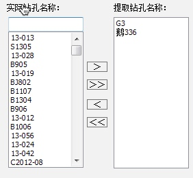
标志层名称(单选)
- 是在绘制钻孔柱状时的参考地层
- 可以任意指定（一般选择本矿区的主采煤层或者是较稳定的标志层）
要连接的标志层名称
- 默认情况下，全部标志层都进行对比
-
要连接的标志层名称对比生效，对比指定煤层及标志层。
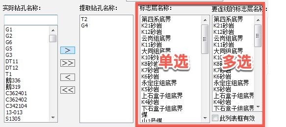
煤层信息
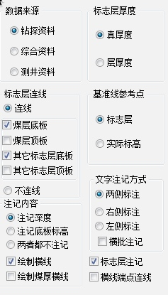
- 数据来源：在绘制对比图时所采用的原始资料，根据实际情况选择
- 钻探资料
- 综合资料
- 测井资料
- 标志层厚度：做对比图时钻孔柱状所采用的厚度资料，一般选择真厚绘制。
- 真厚度
- 层厚度
- 标志层连线
- 连线
- 以所有标志层为基准线，连接所有钻孔的相同标志层。
- 定制连线标志层
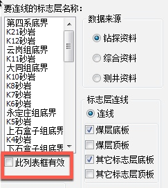
- 链接连线
- 煤层底板
- 煤层顶板
- 其他表示层底板
- 其他表示层顶板
- 不连线
- 所有标志层不连接
- 基准线参考点
- 标志层
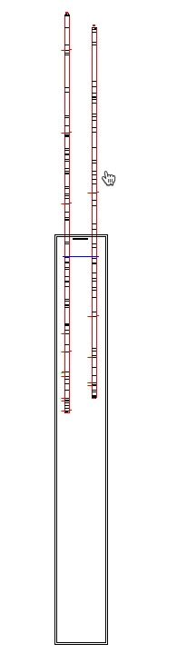
- 实际标高
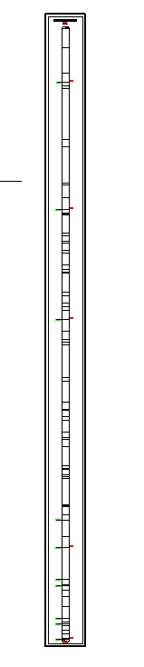
- 系统将根据每个钻孔的实际孔口标高绘制
注记信息
- 注记参数
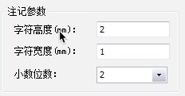
- 字符宽度
- 字符宽度
- 小数精度
- 可以选择可以填写
- 注记内容
1
勾选"连线”选项后，注记将与地层连线。
- 注记深度
- 注记底板标高
- 两者都不注记
- 绘制横线
[ ] 绘制煤厚横线
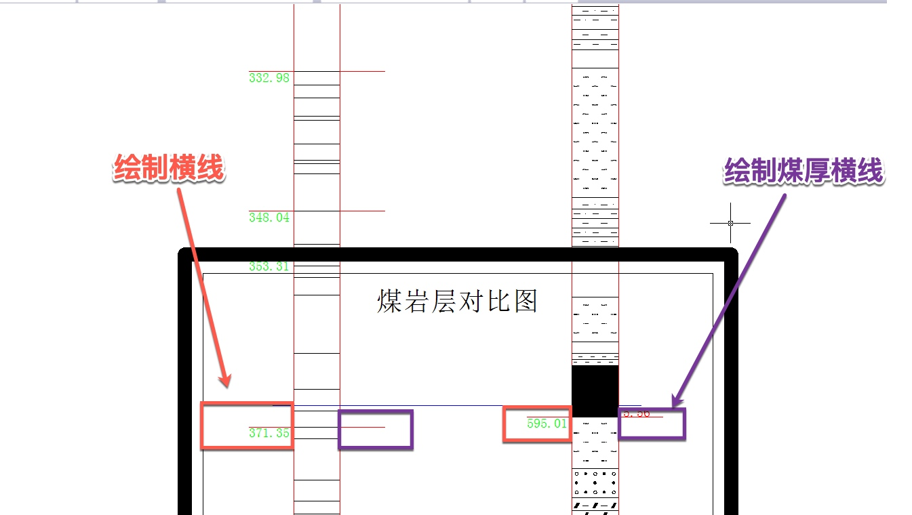
- 文字注记方式
- 两侧标注
- 右侧标注
- 左侧标注
- 选择
右侧标注和左侧标注后可设置横批注记。
- 标志层注记
- 绘制时参考其它钻孔
- 自动调节注记位置到最佳
- 钻孔提取间距设置
- 开始标志层
- 结束标志层
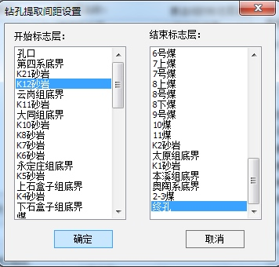
- 设置测井曲线
煤岩层对比图连线
煤岩层对比图生成效果
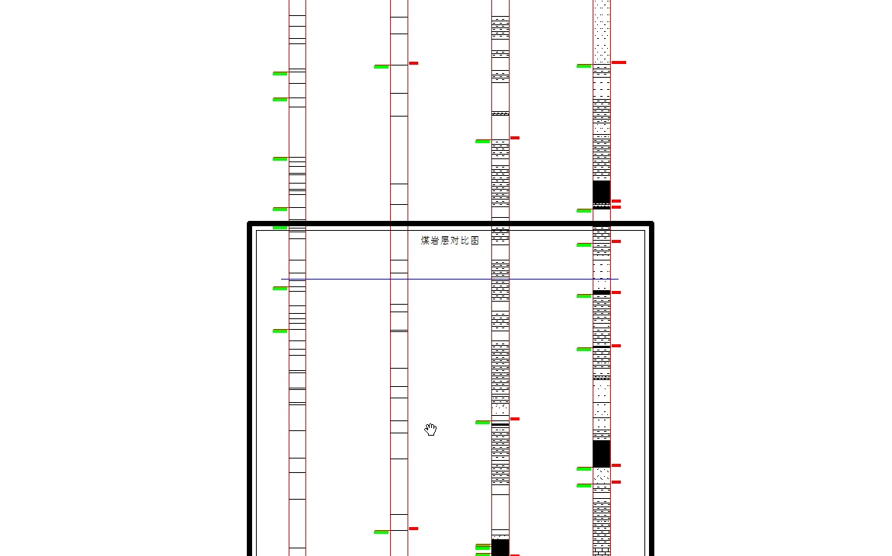
错误信息提示
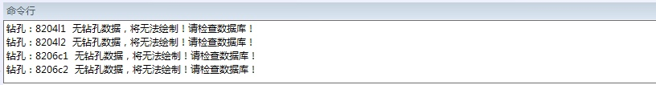
扩展功能
- 煤岩层对比图连线
- 注记地层